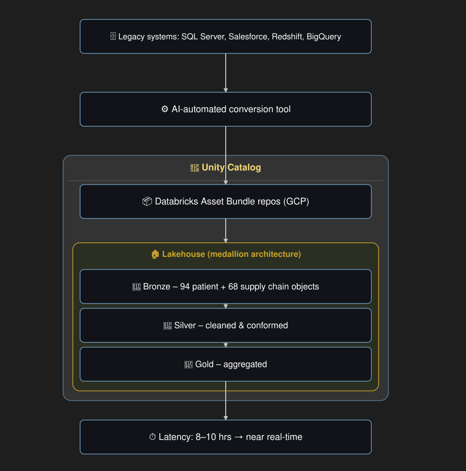
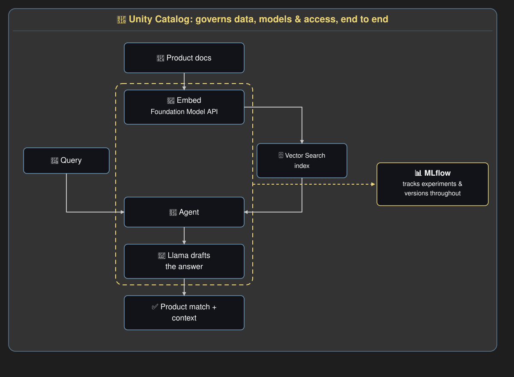

GenAI & Large Language Model Applications
Data Modernisation
A healthcare services organisation migrated data pipelines from its legacy SQL Server, Salesforce, Redshift and BigQuery systems to Databricks, using an AI-automated conversion tool. The tool converted the existing codebase into Databricks Asset Bundle repositories on GCP, governed under Unity Catalog, saving weeks of effort compared with a manual, line-by-line rewrite.
The first phase built out the lakehouse's medallion architecture:
- 94 patient and 68 supply chain data objects were ingested as raw copies into Bronze layers.
- Custom Silver layers cleaned and conformed that data.
- Gold layers aggregated it for downstream use.
This cut reporting latency from 8–10 hours down to near real-time.

Product Discovery
A major financial institution needed both business users and product specialists to find relevant products quickly across its catalogue. Keyword search often struggled to return relevant results, since queries phrased in plain business language rarely matched the exact terminology used in the product documentation. Users then had to manually sift through several documents to confirm a match. The first phase was scoped to a catalogue of over 2,000 products, enough to validate whether an agentic RAG approach would work before considering a wider rollout.
On the Databricks Mosaic AI platform:
- Product documentation was embedded via a Databricks-hosted model through the Foundation Model API and indexed once into a Databricks Vector Search index, refreshed as new or updated documents were added.
- When a user asked a question:
- The LangChain agent used Llama to interpret the query and retrieve the matching product documents from the index.
- Llama then drafted a response tailored to the user: business users received a concise, plain-language answer, while product specialists received a more detailed response with links to the source documentation.
Unity Catalog governed the whole pipeline, managing access to the documents, the vector index and the models, and enforcing the regulatory compliance guardrails required in financial services. MLflow tracked experiments and versioned each iteration of the pipeline.
The proof of concept cut query resolution time, returned more precise product matches than manual keyword search, and passed the client's evaluation for rollout.

Knowledge Support Tool
A leading equipment rental firm needed to help sales representatives respond to customer inquiries faster, reduce manual document searches, and support internal training. Subject matter experts (SMEs) needed to be able to review and correct any flagged response.
The knowledge base was built from the firm's existing documents — structured (CSV, JSON) and unstructured (PDF, HTML) — ingested into S3 and converted to embeddings using GPT-3.5. Chroma was used as the vector store. The RAG pipeline used LangChain's RetrievalQA Chain with a prompt template matching the client's requirements: answers formatted as lists where appropriate, with links to source documents.
The deployment ran on AWS:
- Lambda — input processing, LLM responses, and SME feedback updates
- EC2 via Docker — LangChain dependencies
- Amazon Lex — natural language understanding
- API Gateway — SME review interface
- DynamoDB — metadata storage
Response time for customer inquiries improved by ~22%.